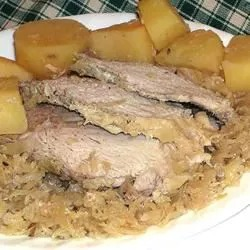

Slow Cooker German Style Pork Roast with Sauerkraut and Potatoes

Description
Everyone wants a scrumptious German style meat and potatoes dish every now and then, but who's got the time? Well, you do. It's super easy with this slow cooker recipe!
Ingredients
- 6 white potatoes, peeled and quartered
- 1 tablespoon minced garlic
- salt and pepper to taste
- 1 (3 pound) boneless pork loin roast
- 1 (32 ounce) jar sauerkraut with liquid
- 2 teaspoons caraway seeds
Steps
- Place potatoes, garlic, salt, and pepper in a slow cooker; stir to coat. Season pork roast with salt and pepper; lay over potatoes. Pour sauerkraut over roast and sprinkle with caraway seeds.
- Cook on Low for 8 to 10 hours.